CiGri FF
1 Identification
1.1 Usage

1.2 Execution Times and Waiting Times
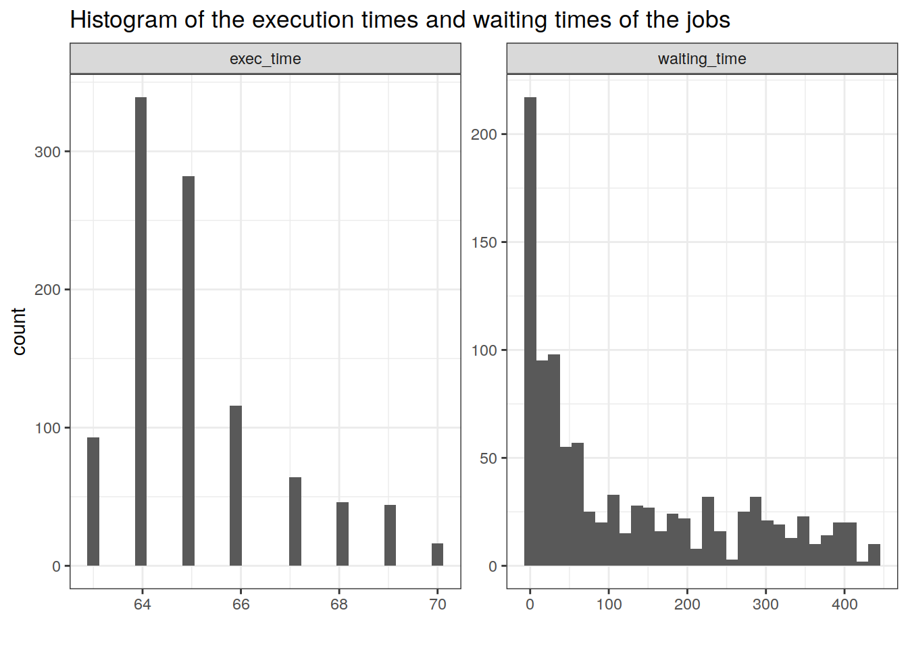
1.3 Gantt Chart
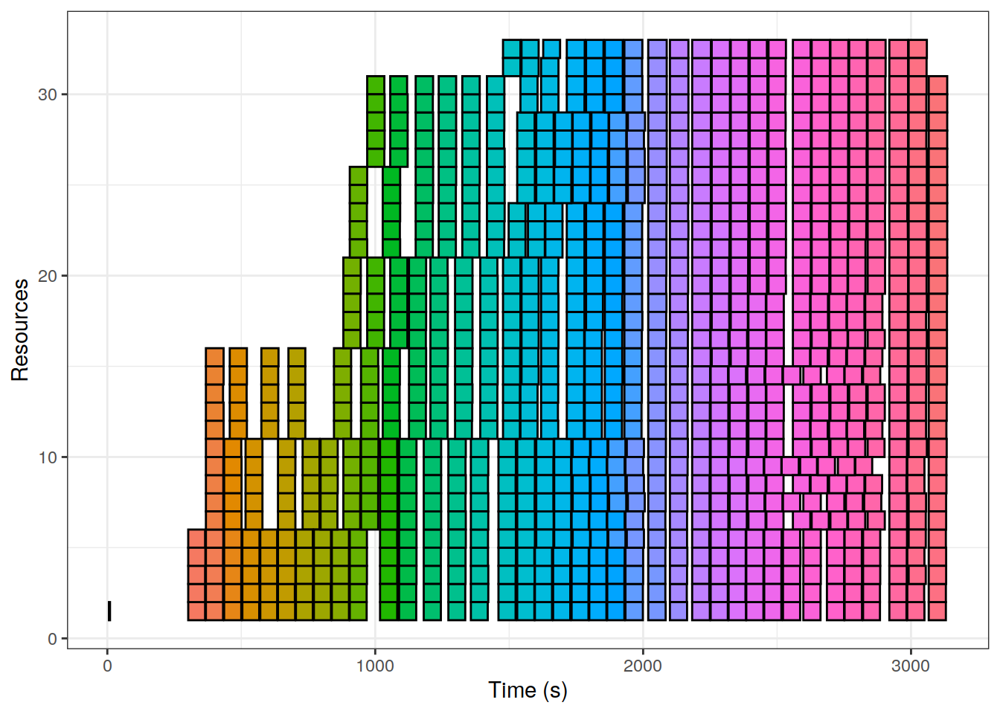
2 Modelling
2.1 Raph Plot

We have actually a very simple model of the system:
\[ r(k + 1) + w(k + 1) = (1 - \alpha) r(k) + w(k) + u(k) \]
where \(\alpha = \frac{\Delta t}{p_j}\), \(\Delta t\) is the time between two CiGri submissions, and \(p_j\) is the processing time of a job.
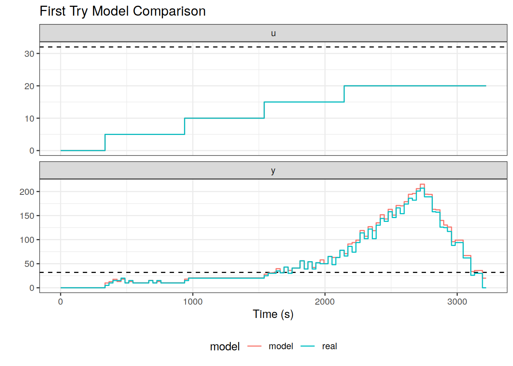
The annoying thing is that we cannot put this equation into a first order model form:
\[ y(k + 1) = ay(k) + bu(k) \]
There are actually two cases:
there are no job in the waiting queue
there are jobs in the waiting queue
2.2 No job in the waiting queue
In this case, \(w(k) = 0\) and the above equation thus becomes:
\[ r(k + 1) + w(k + 1) = (1 - \alpha) r(k) + u(k) = (1-\alpha)(r(k) + w(k)) + u(k) \]
This equation fits the first order model form with:
\(a = 1-\alpha\)
\(b = 1\)
2.3 Jobs in the waiting queue
In this case, we are submitting more jobs than the cluster can process.
The estimated processing rate of the cluster is: \(\alpha \times r_{\max}\).
We can switch a bit our point of view and consider that when overloaded, the cluster does not consume the jobs in the waiting queue, but the jobs submitted.
\[ y(k+1) = y(k) + (u(k) - \beta) \]
where \(\beta\) is the rate of processing of the overloaded cluster.
Intuitively:
\[ \beta = \alpha \times r_{\max} \]
2.4 Model: First try
The model can then be:
\[ \begin{cases} y(k+1) = (1-\alpha)y(k) + u(k)\text{, if } u(k) < \gamma\\ y(k+1) = y(k) + (u(k) - \beta)\text{, if } u(k) > \gamma \end{cases} \]
where \(\gamma\) is a threshold parameter.
Intuitively, \(\gamma\) is the maximum rate that does not overload the cluster:
\[ \gamma = \alpha \times r_{\max} \]
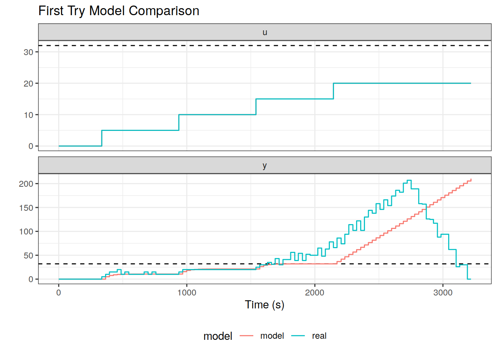
We can see that the cluster starts to overload before the model. The slope of the increase of \(y\) of the model seems smaller than the actual data.
It thus seems that we will need to do a bit of identification on the parameters.
2.5 Model: with small identification
We performed a dichotomy on the \(\beta\) and \(\gamma\) parameters.
We get:
\(\beta \simeq 0.84375 \times \alpha \times r_{\max}\)
\(\gamma \simeq 0.91 \times \alpha \times r_{\max}\)
And we obtain the following model that seems to fit reasonably well the data.
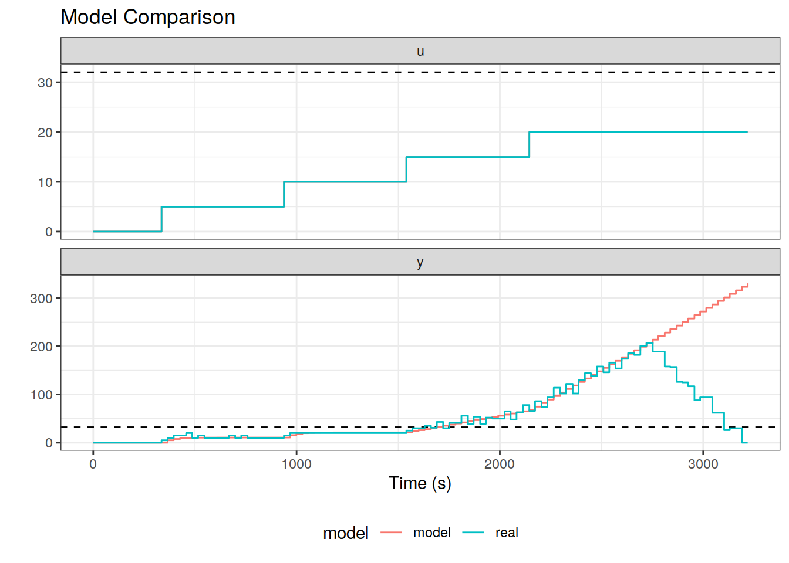
2.6 Verification on non-step input
During the identificaion, we tried variation of input as steps. In this section, we will take the trace of a previous attempt for a controller and see how the model matches the output.
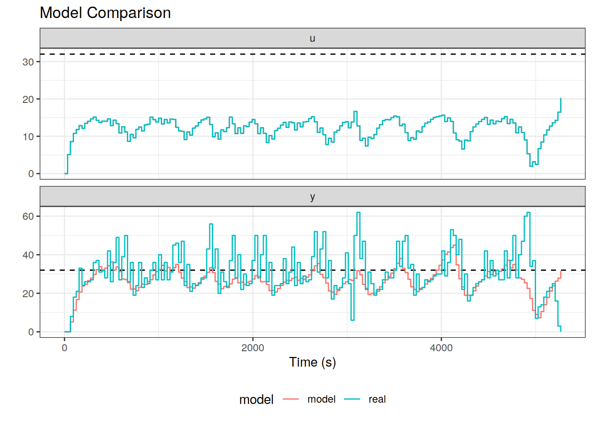
As we can see, the model gets the behaviour of the system.
The noise of the real data comes from the reading of the sensor of OAR that can come at bad times, as seen in the Gantt chart above.
3 Design of the Controller
We follow the methodology in the Heillerstein book.
3.1 If \(u < \gamma\)
\(a = 1 - \alpha\)
\(b = 1\)
\(r = \exp \left(\frac{-4}{k_s}\right)\)
\(\theta = \pi \frac{\log r}{\log M_p}\)
\[ \begin{cases} K_p = \frac{a - r^2}{b}\\ K_i = \frac{1 - 2\times r \times \cos(\theta) + r^2}{b} \end{cases} \]
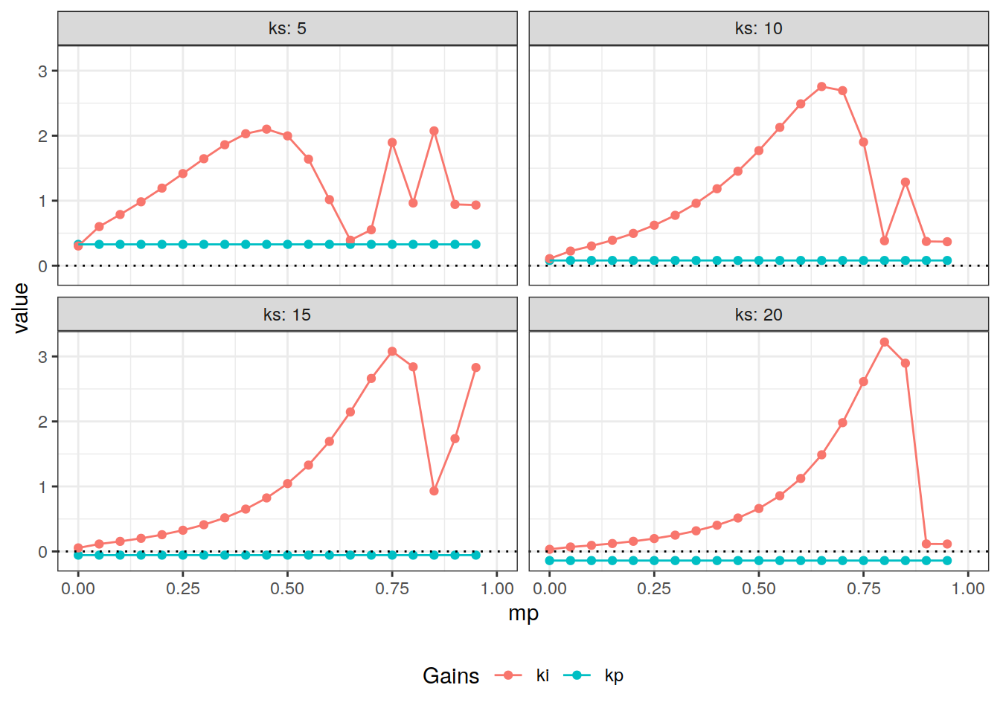
3.2 If \(u > \gamma\)
We define \(u' = u - \beta\).
Then,
\[ y(k+1) = y(k) + u'(k) \]
\(a = 1\)
\(b = 1\)
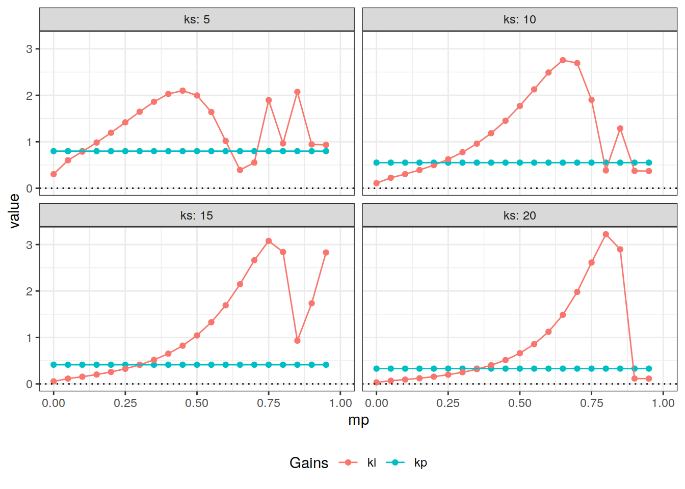
Note: The \(K_i\) coef is the same because it does not depend on \(a\)!
3.3 Pseudo Code
class Controller:
def __init__(self, ...):
self.u = 0
self.cum_error = 0
# ...
def get_u(self, error):
self.cum_error += error
if self.u < gamma:
self.u = kp1 * error + ki1 * self.cum_error
else:
self.u = kp2 * error + ki2 * self.cum_error + beta 4 State Space Variable
\[ x(k) = \begin{pmatrix} r_{\max} \\ r(k) \\ s(k) \\ w(k) \end{pmatrix} \]
\[ x(k+1) = A x(k) + B u(k) \]
where:
\[ A = \begin{pmatrix} 1 & 0 & 0 & 0 \\ 0 & 1-\alpha & 1 & 0 \\ 1 & -\alpha & 0 & 0 \\ 0 & 0 & -1 & 1 \end{pmatrix} \]
and,
\[ B = \begin{pmatrix} 0 \\ 0 \\ 0 \\ 1 \end{pmatrix} \]
4.1 Let’s try
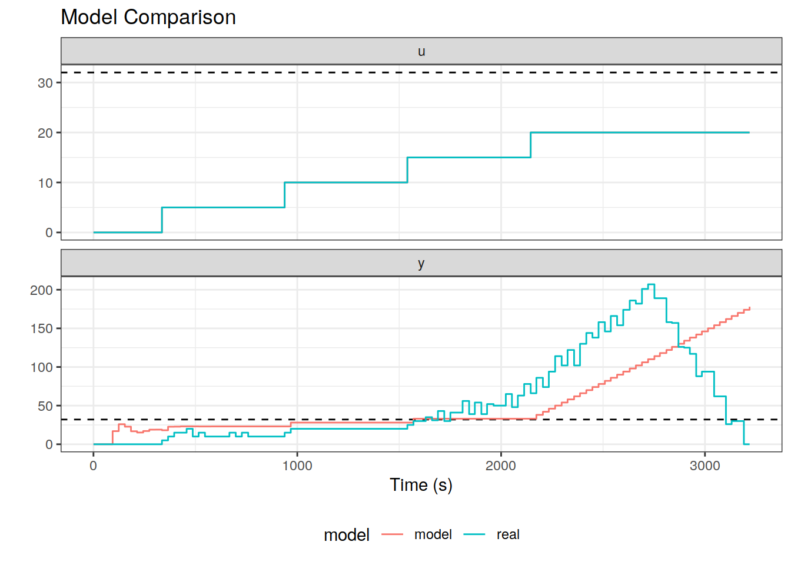
It does not work because the waiting queue will become negative. But even if we restrain it, there is one more issue. The number of submitted jobs should be: \(\min (w(k), r_{\max} - r(k))\) We can express the \(\min\) as a \(\min (a, b) = \frac{1}{2}(a + b - |a-b|)\), but we cannot express the absolute value in the matrix product.
We can try on a non step input:
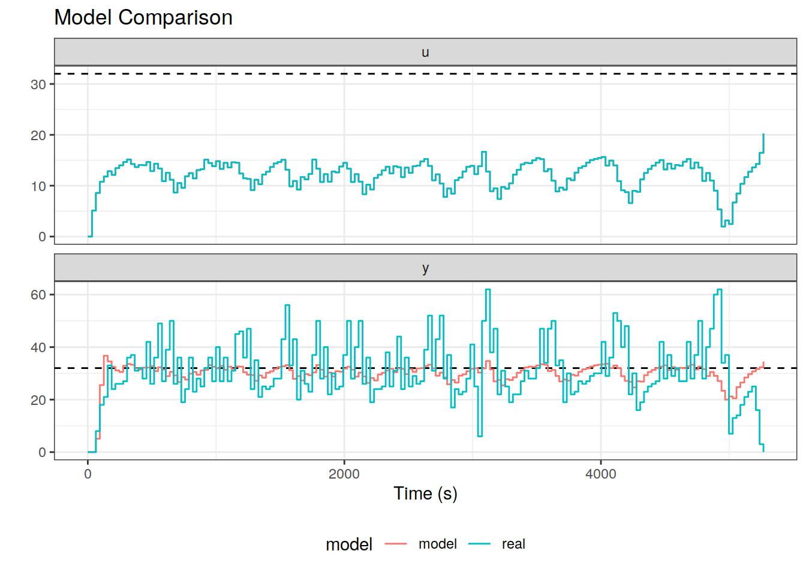
Fuck! It’s actually not that bad! And it has both behaviors on a single model. It is of course not perfect. The identification one is quite striking. Maybe with more precise identification it could be better.
4.2 Details
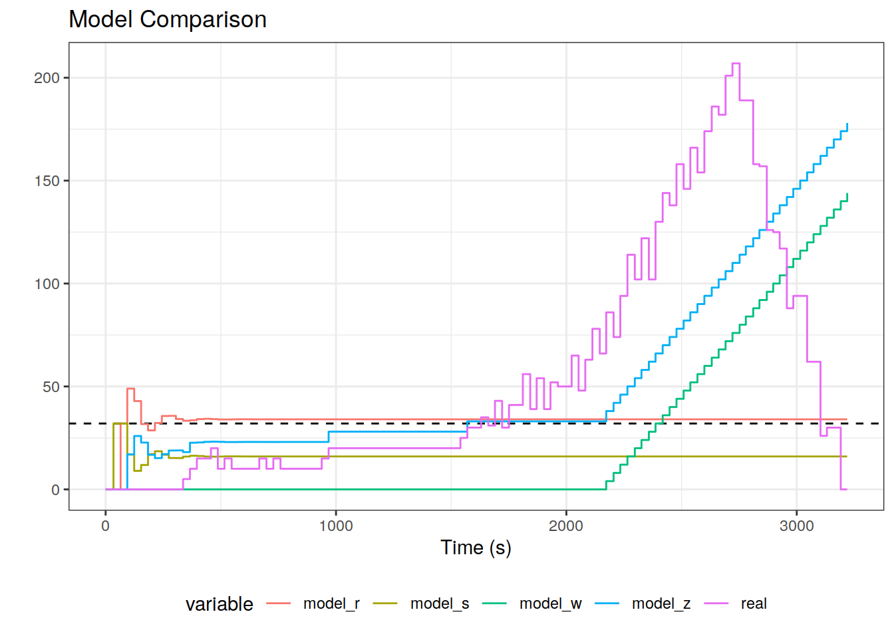